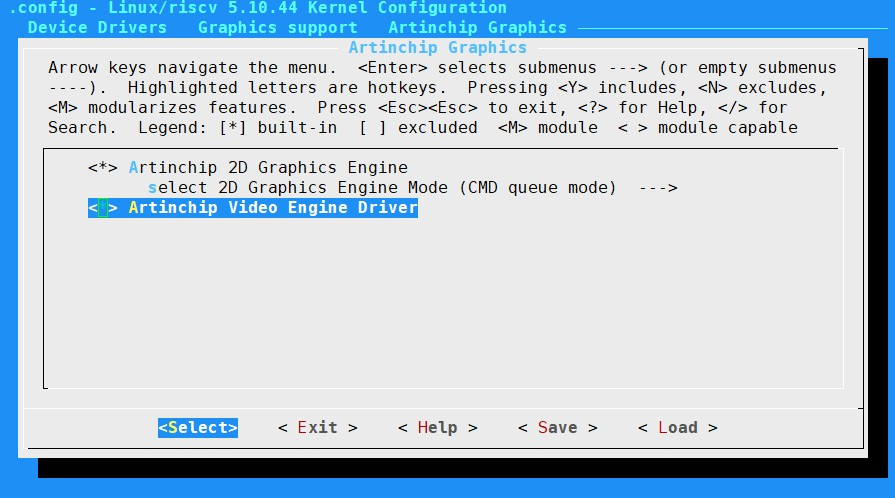

常见问题
2 Dec 2024
VE 驱动未加载
现象
在 /dev 路径下，未发现字符设备 /dev/aic_ve。
原因分析确认内核中是否加载 VE 驱动。

图像解码报错
现象
解码异常报错，未得到解码后的视频帧，或者视频帧数据出错。
原因分析逐步排除以下原因：
-
源文件是否是 VE 驱动支持的媒体文件格式，具体请参考模块介绍的硬件编解码格式章节。
-
源文件是否损坏，可参考 PC 端是否可正常播放。
-
码流解析是否正确，相关 VE 寄存器信息是否配置正确。
解码报错后，VE 驱动中返回了解码当前帧的寄存器状态信息，请参考 Spec 说明对应分析。